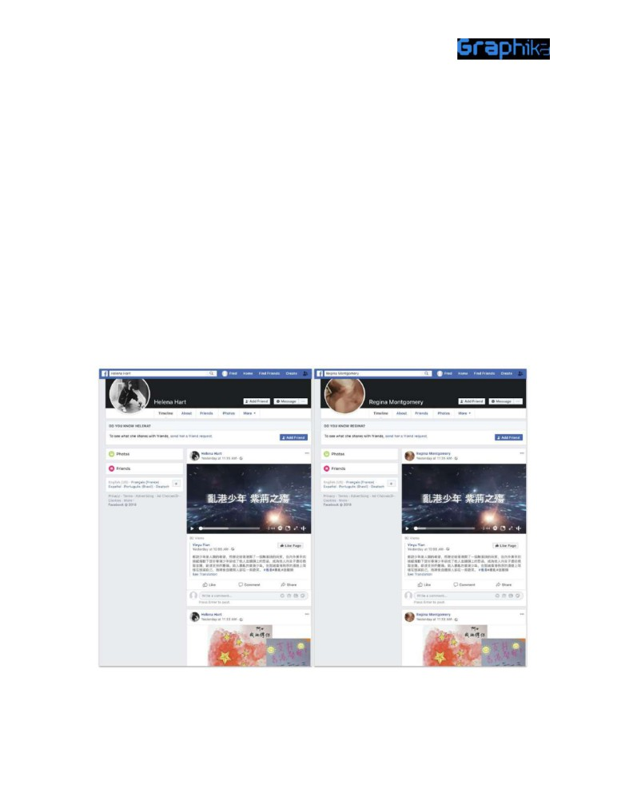
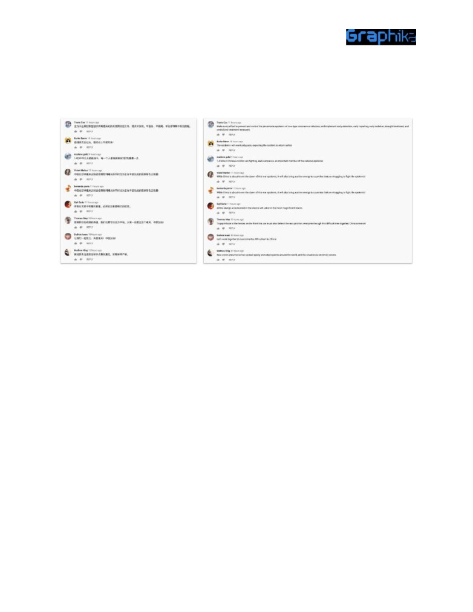
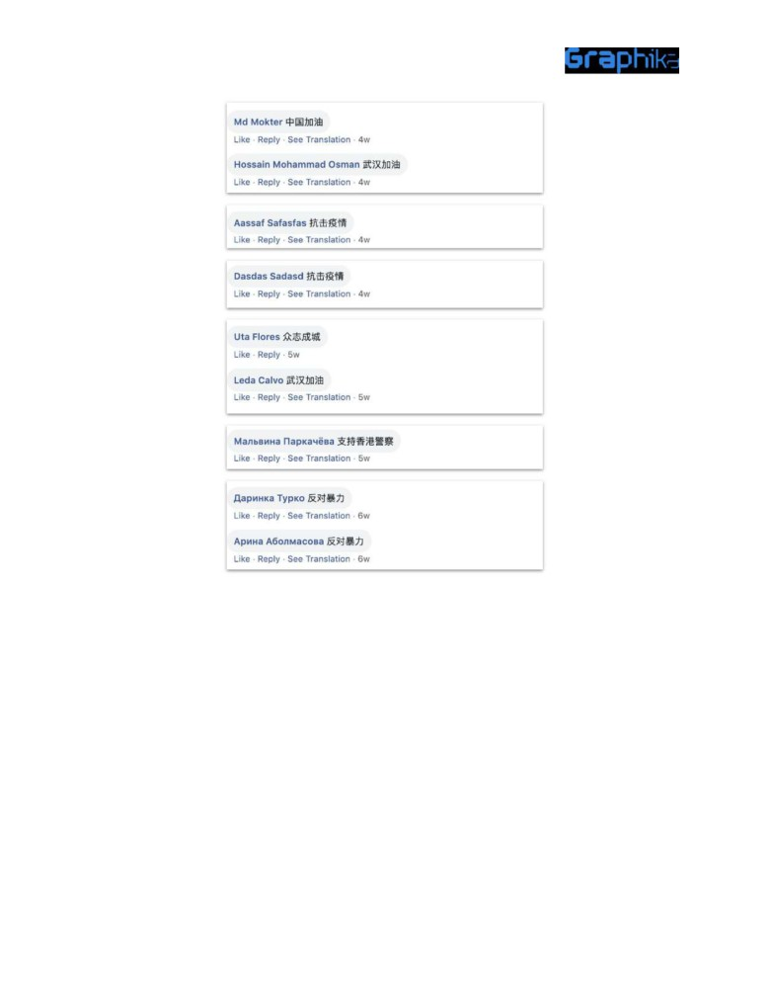

Executive Summary
In early 2020, a pro-Chinese cross-platform political spam network that Graphika has dubbed
“Spamouflage Dragon ” came out of hiding, standing up new accounts and reactivating dormant
ones to post about Hong Kong politics, Chinese regime critics and the Chinese response to
COVID-19.
Until the platforms took its assets down, the network operated across social media, with
presence on YouTube, Facebook , and Twitter (all now removed). Some of its assets were newly
created in early 2020; others appeared to have been created earlier, but only posted spam in their
early days; still others appeared to have been hijacked from users around the world, especially
Bangladesh . The network made heavy use of video footage taken from pro-Chinese government
channels, together with memes and lengthy texts in both Chinese and English. It interspersed its
political content with spam posts, typically of scenery, basketball, models, and TikTok videos.
These appeared designed to camouflage the operation’s political content, hence the name.
Spamouflage Dragon appeared to operate in a dispersed model. Clusters of accounts across
different platforms shared the same content, indicating that they were connected, but not all the
clusters had the same primary focus, suggesting a degree of autonomy rather than rigid central
control. For this reason, we refer to Spamouflage Dragon as a network, rather than an operation.
When Graphika originally identified the network in September 2019, it focused on praising the
Chinese authorities and attacking the Hong Kong protesters, as well as attacking exiled Chinese
billionaire and regime critic Guo Wengui (郭文贵, also known as “Miles Kwok”).1 After its exposure
and the associated takedowns by platforms, the network largely went into hiding. As international
pressure grew on the Chinese government for its handling of the COVID-19 outbreak,
Spamouflage Dragon came out of hiding, turning up the volume of its posts about Hong Kong and
Guo, and adding in praise for the Chinese government’s response to the virus.
This activity was prolific, but it failed to break out of its own echo chamber. All the likes, shares,
and comments on the network’s posts that Graphika has identified came from other members of
the network. Spamouflage Dragon makes the case once again that not all attempts at online
influence encounter viral success.
Spamouflage Dragon is a persistent actor: after the takedowns of late 2019, it tried to rebuild by
activating, creating or obtaining new assets. This highlights the importance of continuous
enforcement in this space: networks that have been detected and exposed may try to revive their
operations with new accounts, but they face the challenge of building an audience while trying to
stay hidden from the platforms.
1 Guo’s “G News” network has itself been found spreading coronavirus misinformation.
1

Background: Spamouflage Dragon
Graphika identified Spamouflage Dragon in September 2019, after Twitter and Facebook exposed
a state-run information operation on its platform that criticized the Hong Kong protesters and
praised the Hong Kong and Chinese authorities.
Working from leads in Twitter’s published dataset, Graphika identified a large-scale spam network
that centered on YouTube videos but amplified their content across Facebook and Twitter. This
original network numbered hundreds of accounts across the three main platforms but generated
little measurable engagement from authentic users.
A number of behavior patterns characterized the original network: many of its accounts had
Western, Slavic, or Bangladeshi names and profile pictures but posted in Chinese; they
interspersed political content with unrelated spam, either video, text, or photographic; sometimes,
different accounts posted the same content in the same order, suggesting that they were
automated.
Timelines for Facebook accounts “Helena Hart” and “Regina Montgomery,” showing identical posts in the
identical order. From Graphika’s original report.
2
Video pages for “Lew Belchenko” and “Miroslaw Belotelov,” on YouTube (both removed); screenshots taken
on September 19, 2019. Note the same posts in the same order and the Slavic names combined with
Chinese posts. From Graphika’s original report.
The political content centered around two themes: the Hong Kong protests and Guo Wengui, a
vocal critic of the Chinese Communist Party (CCP). Their stance was routinely pro-CCP and
critical of Guo, whose followers it referred to as “ants,” and the protesters, whom it characterized
as “thugs” and “cockroaches.”
Posts by Spamouflage asset “Michael Welsh” (removed). Attacks on Guo are marked in red, criticism of the
protesters is marked in yellow. A video attacking both is marked in orange. From Graphika’s original report.
3
The network used its assets in two ways. Some were primary posters. These assets posted series
of video or photographic content, usually with accompanying text making a political point. Some
appear to have been taken over from authentic users; for example, the YouTube channel Michael
Welsh (removed), illustrated above, was originally called Somerset Savings and carried the logo of
an American bank of that name.
Other assets were amplifiers. Often created only days before, and more obviously inauthentic
accounts, these accounts liked, shared, replied to, or commented on the primary accounts’ posts,
giving them the appearance of popular engagement.
Left, a post attacking Guo Wengui from suspected initiator asset “Md Morshedul Alam,” a public Facebook
“interest” page designed to look like the personal account of a South Asian man but posting in Chinese. Right,
one of the accounts that commented on its post, suspected amplifier asset “Christine Langlois. ” This account
only posted in Chinese, and its first profile picture, a blonde woman, was in fact taken from a model .
4
Sleeping Dragon
Following Graphika’s exposure of Spamouflage Dragon, the platforms took down a significant
number of accounts and pages affiliated with this operation. In response, the network appears to
have tried to go “under the radar,” activating or acquiring a small number of dormant assets but
using them to post at a far lower level and with a far lower proportion of political content.
For example, one Spamouflage Dragon asset that came to the fore in early 2020 was the
Facebook page 画苑之花 (Flower of the Garden), which was created on January 16, 2019. It
originally had a name characteristic of users in Bangladesh, suggesting that it was not created
with a Chinese-language operation in mind.
Page transparency settings for “Flower of the Garden,” showing the Bangladeshi name.
Throughout the first months of 2019, this posted uplifting English-language comments and
images of scenery. As the initial wave of takedowns hit the network, it shifted to a characteristic
blend of Chinese-language political posts and spamouflage - either because the Spamouflage
Dragon network had been maintaining it as a backup account and had now activated it, or
because the network acquired it from a spam operator and repurposed it.
5
Posts by Flower of the Garden on October 8, 2019, showing the mix of spam and anti-Guo content.
However, the proportion of political content it posted remained very low: throughout the final
months of the year, the page posted almost exclusively scenic content, sometimes interspersing
it with uplifting slogans and movie references. It did post the occasional political content, but only
on the order of one political post per week.
Typical posts by Flower of the Garden in November 2019.
6
This continued throughout November, December, and much of January; one of its rare political
posts in this period concerned demonstrations in Hong Kong on New Year’s Eve.
Hong Kong-focused post by Flower of the Garden on January 2, 2019.
At the very end of January - a time when China was under increasing international pressure for its
botched handling of the beginning of the coronavirus outbreak, with the United States imposing a
travel ban on January 31 - Flower of the Garden bloomed once more, posting a much higher
proportion of political content that praised China and attacked its international critics - and Guo.
Posts by Flower of the Garden, late January and early February 2020. Left to right, attacking Guo; urging
prevention; attacking “foreign media”; and expressing confidence in China’s victory.
This suggests that the Flower of the Garden page was a commercial acquisition, created by users
unrelated to the network (perhaps in Bangladesh), obtained by the operation around the time of
7
the first disruption, but then run in an online variation on “stealth mode” until the operators
decided to turn up the volume.
This “stealth” phase remained a cross-platform effort: Flower of the Garden shared posts from a
number of YouTube channels that appear to have been members of the network. For example, its
post that expressed confidence in China’s victory, illustrated above, led to a YouTube channel
called 爷爷最强 (removed) - or Grandpa is the strongest - complete with an image of an old man.
This channel was created on August 12, 2015. It posted three videos advertising free online
movies in English in 2015-2016, then fell silent. On October 23, 2019, it started posting short
spam videos, each with a number as the only headline. It posted 32 such videos, none more than
11 seconds long, over the next two weeks. Starting on November 8, 2019, it began interspersing
these spamouflage videos with longer segments (roughly 3 minutes) on the Hong Kong protests
that it posted every few days, for example on November 8, November 10, November 14,
November 20, and December 2. Starting on February 3, it turned its attention to the virus, claiming
that “We will definitely overcome the epidemic”; on February 19, it accused Guo’s supporters of
spreading “conspiracy” theories about the virus.
The changing pattern of behavior on this channel suggests an account that was created by an
unrelated user and abandoned in 2016, then acquired by the Spamouflage Dragon network in
October 2019, after the first round of takedowns. As with other assets, it initially focused on the
Hong Kong protests before pivoting to coronavirus messaging and attacks on Guo.
8
Videos by “Grandpa is the strongest” (removed), ordered by date, with the headlines auto-translated from
Chinese. The upper image shows the earliest known posts, the lower image shows posts in February.
The same pattern played out on Twitter. For example, one account that posted Spamouflage
Dragon content in March 2020 was called @kstaceee , screen name Kathryn Stacey. This account
was created in 2009, when it posted in English, but it fell silent in 2013. It posted a few apparently
commercial tweets and offers of a followback in English between 2016 and September 2019 and
then began posting in Chinese about Hong Kong in late October 2019, at a very low level - less
than a tweet a day on average. This appears to have been an account created by a genuine
individual but abandoned in 2013, hijacked and repurposed by a commercial operator in 2016,
and then taken over by Spamouflage Dragon in late October 2019, after the initial round of
takedowns.
9
Timeline of @kstaceee’s behavior from 2011.
This account, too, shifted its focus in late January to talking about the coronavirus. In March, as
the Chinese government’s narrative shifted to arguing that China had responded better than the
United States, it tweeted about the reported wave of xenophobic attacks on Chinese Americans
linked to the outbreak.
Tweets by @kstaceee in Chinese on coronavirus and US attacks on Chinese Americans. The left-hand post
10
Similarly, an account called Steve Jones (handle @hammondace) was created in 2010 and gave a
location in Leighton Buzzard, England. It fell silent in mid-2018, began posting apparent
English-language spam in August 2019, and then shifted to Chinese-language political messaging
about the Hong Kong protests on October 25, 2019. Again, this appears to have been a hijacked
account that was repurposed for political messaging.
Timeline of @hammondace’s behavior.
Tweets by @hammondace and @kstaceee on March 27; note the retweeters, which have since been
suspended.
11
The network’s attempts to hide were not wholly successful. The timelines of operation assets
over this period show a patchwork effect, with some of the posts they amplified having already
been removed. This pattern suggests a cat-and-mouse game, with the Spamouflage Dragon
operators trying to stay in business without getting caught and the different platforms periodically
disabling some network assets, most likely as a result of automated detection.
Posts by Harmony Becket in February 2020, sharing subsequently deleted content from Facebook (left) and
YouTube (removed). Note the content, with its focus on Chinese unity and attacks on the Hong Kong
demonstrators.
The impression that Spamouflage Dragon tried to hide after the exposures of September-October
2019 is reinforced by the way some of its assets changed their names. This is most easily
discernible on Facebook, where the Page Transparency feature allows viewers to see when pages
shifted identity.
12
In our 2019 report, Graphika pointed out how many of the Spamouflage Dragon pages claimed
identities linked to Bangladesh; a surprisingly high number of these Chinese-language pages had
names referencing Islam, or beginning with “Md” or “MD,” a common abbreviation for
name on the day it was created, a pattern that is (thus far) unique to Spamouflage Dragon among
the influence operations Graphika has studied. This may have been an attempt to give the new
page followers from an older one, or to hide the older one’s tracks.
Page transparency settings for original Spamouflage Dragon assets Md Shaiful, MD Rashed, and Md Farok.
Note the way each page was merged with a page of the same name on the day it was created.
On a number of occasions in the investigation into the revived Spamouflage Dragon network,
Graphika discovered pages with Chinese names that had been changed from Bangladeshi ones.
Flower of the Garden was not the only one. The page 咖啡杯 (coffee cup) was created as “Monirul
Islam” on November 25, 2018 and merged with a page of the same name on the same day. On
February 24, 2020, the name changed to the Chinese one.
13
Page transparency for “coffee cup,” showing how it began life as Monirul Islam and merged with a page of the
same name that same day.
A rather more recent page, currently called 唐悠然 (Yu Yuhan), began its life as “Mohammad
Monir” on October 27, 2019, after the first major round of disruptions. It merged with a page
called 唐悠然 (Tang Youran) the same day, perhaps as a way to hide the latter’s traces. On
February 18, 2020, as Spamouflage Dragon ramped up its output, it changed its name to the
current Chinese format.
Page transparency for Yu Yuhan, showing its origin as Mohammad Monir.
14
Finally, the page 娜娜 (Nana) began its shadowy existence on December 6, 2019, as “M K Harunur
Rashid.” In keeping with Spamouflage Dragon’s known practice, it merged with a page of the
same name on the same day. On February 19, 2020, it changed to the current Chinese name.
Page transparency for Nana, showing its transformation from M K Harunur Rashid.
It is worth noting that each of these assets had a little under 5,000 followers, the level at which
Facebook’s page transparency setting automatically shows where a page is administered from.
This may be coincidence, but so many of the Spamouflage Dragon assets had followings in the
range from 4,000 to 4,900, and yet had so little engagement on any of their posts, that it may also
indicate a policy of purchasing enough followers to make the assets look authoritative, without
obtaining so many that they triggered the transparency setting.
15
Catching COVID-19
The Spamouflage Dragon network appears to have responded to COVID-19 global conversations
and geopolitical tensions in two ways. First, as we have seen, it began posting coronavirus-related
content from its existing assets. Second, it acquired or created new accounts to amplify its
messaging.
This, again, was cross-platform activity; for example, on February 19, 2020, the YouTube channels
were created, either by the Spamouflage Dragon network or by an external supplier. On February
YouTube channel Tina Lawler (removed) were created.
These acted as typical operation amplifiers. For example, neither “hu meiyi” nor “niu jiaowei”
posted any of its own content, but each maintained a playlist featuring (removed) the same ten
videos in the same order. Six were subsequently deleted; the other four all praised China’s
reaction to COVID-19.
Playlists on YouTube by hu meiyi and niu jiaowei (both removed), with the headlines automatically translated
from Chinese. Graphika verified that the six deleted videos were the same on each playlist.
Importantly for the purpose of attributing these new assets to the same network, they intersected
with the known Spamouflage Dragon assets of the October 2019 vintage. For example, the
Facebook page Zi Xiangyan, created on February 4, 2020, shared content from Flower of the
Garden. The Twitter account 自由东北电台 (Free northeast radio, @RNA_Chinese , exposed as a
pro-Chinese operation by ProPublica ) retweeted @kstaceee. This account was created on March
16
9, 2020, and its name and logo closely resembled the genuine US government-funded Radio Free
Asia (@RFA_Chinese).
Shares by new Spamouflage Dragon assets of older ones. Left, Facebook share by Xi Ziangyan of Flower of
the Garden; right, Twitter share by @RNA_Chinese of @kstaceee.
Similarly, the newly created Twitter account @JoshuaParmer8 and the earlier Spamouflage
Dragon Facebook page Uzzal Miah (created on January 19, 2019, three days after Flower of the
Garden) posted a series of the same landscape photos in the same order.
17
Landscape posts by Uzzal Miah (left) and @JoshuaParmer8 (right), a week apart.
Both the newly created Twitter account @BenedettoBrind1 2 and the older Spamouflage Dragon
page Harmony Becket shared a link to the same YouTube video (removed), headlined 同心抗疫 你
2 This account appears to have deleted its posts soon after making them, but the tweet was preserved in
the Wayback machine.
18

我出力 (fighting the epidemic with one heart, everyone shall put in efforts). This was posted by a
YouTube channel (removed) that bore a strong resemblance to earlier Spamouflage Dragon
primary posters, and it featured patriotic responses in Chinese from accounts whose names and
profiles were Western and whose behavior was similar to earlier Spamouflage Dragon amplifiers.
Left, original Chinese-language comments from accounts with Western names appended to the video shared
by @BenedettoBrind1 and Harmony Becket. Right, automatic translations.
Prior to its removal the YouTube channel in question had only two subscribers, and the video only
attracted one like, but it garnered 37 comments. The channels that commented seldom posted
any content other than spam, but they featured multiple playlists of videos that praised China’s
response to the virus and attacked its critics. Those videos, in turn, came from yet more channels
with Western names that posted pro-Chinese government and anti-Guo content mixed with
spam. All this is consistent with Spamouflage Dragon’s earlier activity.
Across the network, Spamouflage Dragon assets replied to, liked, and shared each other’s posts,
but almost invariably did not follow one another. For example, the Twitter account
@RNA_Chinese only followed 11 other accounts, including (ironically) @RFA_Chinese, but it
retweeted or @-mentioned other suspected members of the network in its tweets.
19
Tweets by @RNA_Chinese, tagging other suspected members of the network.
Similarly, on Facebook, the page Allandam , created on December 31, 2019 and allegedly based in
Chittagong, Bangladesh, appears to have served as a primary poster, with various amplifier
accounts sharing and commenting on its posts. Some of those amplifiers began hiding their
responses around March 28, but earlier comments remained visible. They highlighted the wide
range of accounts and pages that Spamouflage Dragon used, some with the minimum of
disguise: responders included assets with names in Chinese, Spanish, Russian, and apparent
gibberish based around the letters A, S, D, and F.
20

Some of the comments on posts by Allandam; note the range of names.
This behavior was typical of the earlier Spamouflage Dragon network. It appears likely to have
been an attempt to make the network’s activity look more organic, with a few high-value primary
assets and a larger number of commentators, but without a dense network of mutual follows that
might have made it look like a centrally controlled operation. The assets were associated with one
another by replies, likes, and shared content, not follower/following relationships.
21
Content Highlights
As we have noted, the US decision to ban travelers from China at the end of January appears to
have galvanized Spamouflage Dragon out of its semi-dormant state. When it re-emerged, the
network’s focus was not on the pandemic itself, but on its political implications: the content it
amplified praised the Chinese government’s response to the outbreak, especially China’s health
workers. In late January and early February, the network also expressed confidence in China’s
ability to handle the virus.
Posts by Allandam and the Twitter account known as @WNXlJINOmm9xxSo on the subject of confidence at
the end of January and early February.
22
Posts by Allandam and @fossefreak in February, linking Guo, the Hong Kong protesters, and the virus.
By March, the tone had changed: it proclaimed China’s “victory” in the “war” against the epidemic,
praised China’s status as a role model for other countries, and contrasted China’s “victory” with
the struggles of Western countries, especially the United States. This did not come at the expense
of the network’s traditional attacks on Guo and the Hong Kong protesters; rather, the virus
became one more way to attack them. These narratives mirror those echoed by Chinese
state-sponsored media in English.
Tweets by @RNA_Chinese on the US infection rate and on China’s “amazing achievement.”
23
Tweets by @fossefreak on the Hong Kong protests; note that the right-hand tweet tags @kstaceee.
Posts shared by Harmony Becket on China’s “unity and trust in the government,” its “strong cohesion and
great focus.”
24
Posts by “Sheila Torres” on Western “arrogance and prejudice,” and by Allandam accusing the Hong Kong
protesters of using the coronavirus outbreak for their own ends.
Posts by Harmony Becket on February 1, attacking Guo for trying to “use the virus” and claiming Chinese
unity. These posts were made as Spamouflage Dragon began addressing the coronavirus pandemic, just as
the US travel ban was imposed.
25
A memorable post from Alladam on February 23, taking credit for China “effectively control[ling] the spread of
the epidemic globally.”
Conclusion
The most noteworthy feature of the Spamouflage Dragon network is its endurance. Some assets
evaded enforcement in September 2019, either because the platforms did not detect them or
perhaps because they found that the assets did not violate specific policies. Other assets were
newly created in early 2020, and still others appear to have been obtained and repurposed for
pro-Chinese messaging needs. This combination of tactics allowed the network to keep on
posting, albeit at a reduced level, throughout the winter, and left it a core of assets on which it
could build once it switched to coronavirus messaging in the spring.
In particular, the network’s dispersed nature requires further clarification. As noted, clusters of
accounts across different platforms share the same content, indicating that they are connected,
but not all the clusters have the same primary focus, suggesting a degree of autonomy. It is not
yet clear whether the Spamouflage Dragon network is run by one organization or is a more
cooperative endeavor of small groups. What is clear is that those operators are determined and
persistent. Further study and monitoring may shed light on how they operate and expose further
efforts to build their network.
26